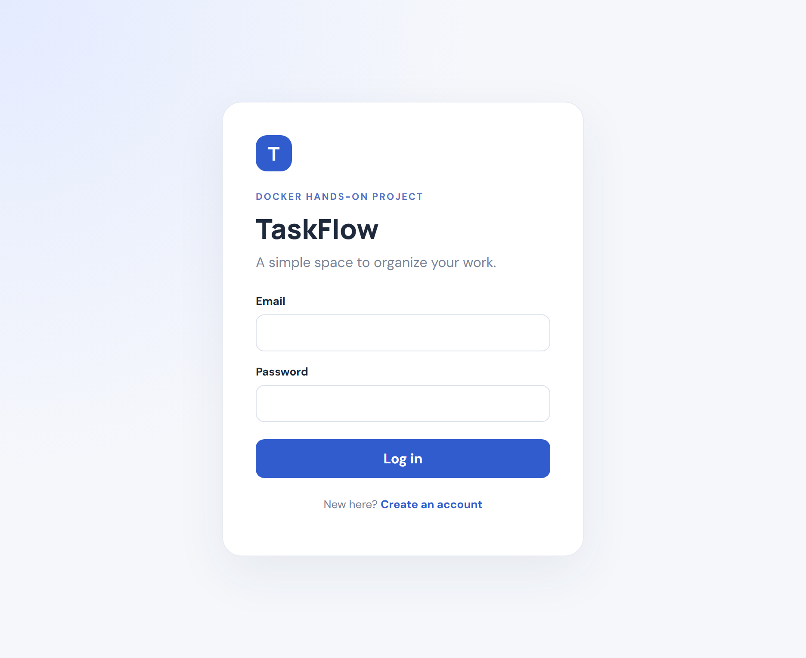
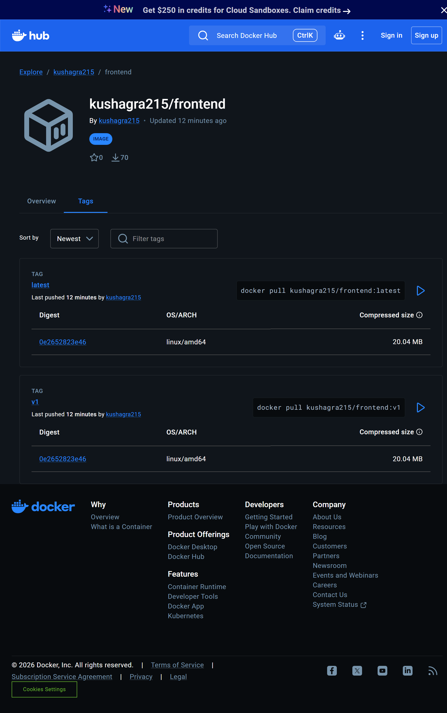
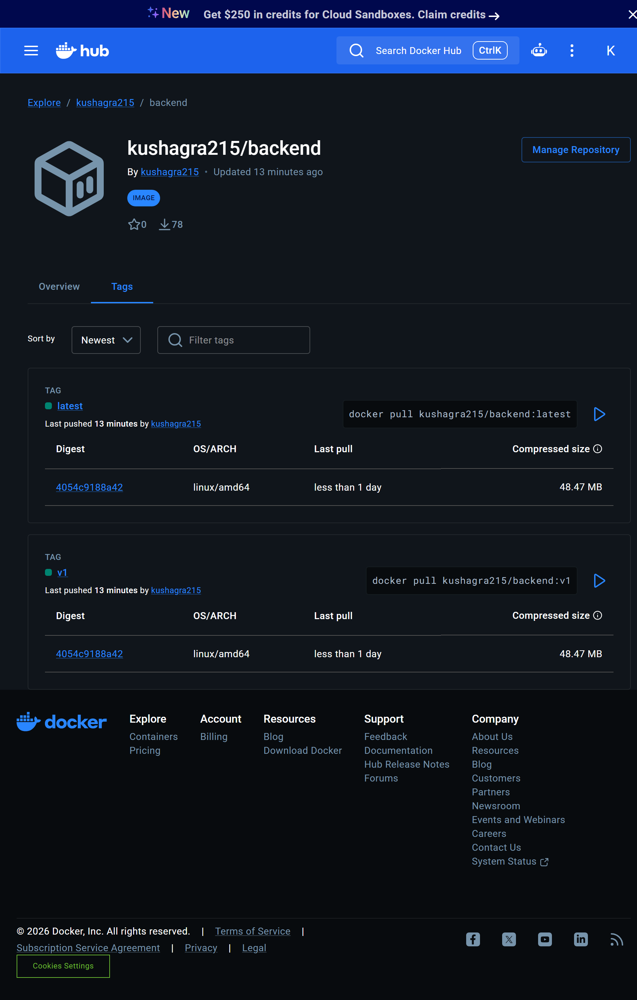

| Student name | Kush | Roll number | 202401100400113 |
|---|---|---|---|
| Section | B | Branch | AIML |
| GitHub username | kush1246 | Docker Hub username | kushagra215 |
| Repository | https://github.com/kush1246/MSE-2-SSED-Evening | ||
| Original repository | https://github.com/atindeRR/MSE-2-SSED-Evening | ||
| Working branch | docker-set-2/202401100400113-kush-b | ||
| Frontend | https://hub.docker.com/r/kushagra215/frontend |
|---|---|
| Backend | https://hub.docker.com/r/kushagra215/backend |
| Tags | frontend:v1, frontend:latest, backend:v1, backend:latest |
| Requirement | Verified evidence |
|---|---|
| Forked repository | Verified — personal fork used |
| Frontend Dockerfile multi-stage build | Verified — Node.js build stage + Nginx Alpine runtime |
| Backend Dockerfile | Verified — Node.js 20, production dependencies |
| docker-compose.yml | Verified — frontend, backend, PostgreSQL, Redis |
| Custom Docker network | Verified — taskflow-deploy_taskflow-net |
| PostgreSQL named volume | Verified — postgres-data |
| Required health checks | PostgreSQL, Redis and backend healthy |
| Both Docker images built | Both frontend and backend builds completed |
| Docker Hub v1/latest tags | All four tags pushed successfully |
| Image deployment | docker-compose.deploy.yml tested successfully |
| Networking and persistence | Custom network verified; PostgreSQL volume tested |
| GitHub Actions workflow | Workflow created; remote run URL pending secret/push |
| Pull Request / instructor CI | Pending push and explicit external submission approval |

Genuine browser screenshot of http://localhost:8080/.

Genuine Docker Hub tags page showing kushagra215/frontend.

Genuine Docker Hub tags page showing kushagra215/backend and v1/latest evidence.
NAME IMAGE STATUS PORTS taskflow-deploy-backend-1 kushagra215/backend:latest Up (healthy) 0.0.0.0:3000->3000/tcp taskflow-deploy-frontend-1 kushagra215/frontend:latest Up (healthy) 0.0.0.0:8080->80/tcp taskflow-deploy-postgres-1 postgres:16-alpine Up (healthy) 5432/tcp taskflow-deploy-redis-1 redis:7-alpine Up (healthy) 6379/tcp
GET http://localhost:3000/health
{
"status": "ok",
"postgres": "ok",
"redis": "ok"
}
GET http://localhost:8080/
StatusCode: 200
StatusDescription: OKdocker compose -f docker-compose.deploy.yml exec postgres pg_isready /var/run/postgresql:5432 - accepting connections docker compose -f docker-compose.deploy.yml exec redis redis-cli ping PONG
Network: taskflow-deploy_taskflow-net Driver: bridge Subnet: 172.18.0.0/16 frontend: 172.18.0.5/16 postgres: 172.18.0.2/16 backend: 172.18.0.4/16 redis: 172.18.0.3/16
Before recreation: Created Persisted Docker Task, ID 2. docker compose stop postgres docker compose rm -f postgres docker compose up -d postgres SELECT id,title,description,status FROM tasks; id | title | description | status 2 | Persisted Docker Task | Volume recreation proof | Pending
docker compose restart redis Container taskflow-deploy-redis-1 Restarted redis-cli ping PONG
Test Suites: 1 passed Tests: 12 passed TC01 health endpoint — passed TC02 register user — passed TC03 duplicate email — passed TC04 login — passed TC05 unauthenticated request — passed TC06 create task — passed TC07 list and populate cache — passed TC08 Redis cache response — passed TC09 update and invalidate cache — passed TC10 invalid status — passed TC11 delete task — passed TC12 deleted task absent — passed
docker push kushagra215/frontend:v1 ✓ digest pushed successfully docker push kushagra215/frontend:latest ✓ digest pushed successfully docker push kushagra215/backend:v1 ✓ digest pushed successfully docker push kushagra215/backend:latest ✓ digest pushed successfully
docker compose -f docker-compose.deploy.yml pull 4/4 images pulled docker compose -f docker-compose.deploy.yml up -d Network and volumes created PostgreSQL and Redis healthy Backend and frontend healthy
The CD workflow is committed at .github/workflows/cd.yml. It requires the repository secrets DOCKERHUB_USERNAME, DOCKERHUB_TOKEN and POSTGRES_PASSWORD.
| GitHub Actions run URL | Pending push and secret configuration |
|---|---|
| Pull Request URL | Pending explicit push/PR approval |
| Instructor CI result | Pending Pull Request creation |
I hereby declare that the submitted implementation has been completed by me. I have tested the Docker configurations, Docker Compose deployment, Docker Hub image publishing and GitHub Actions CI/CD pipeline. The screenshots and evidence included in this document represent my actual implementation.
Student: Kush
Roll number: 202401100400113